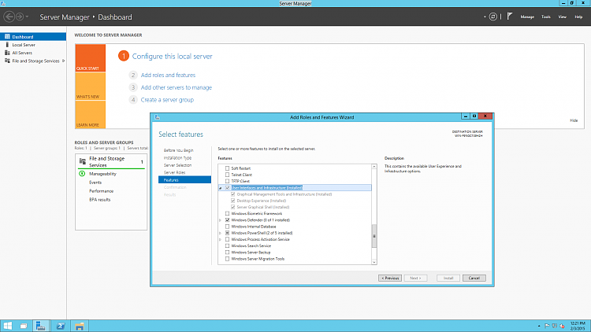
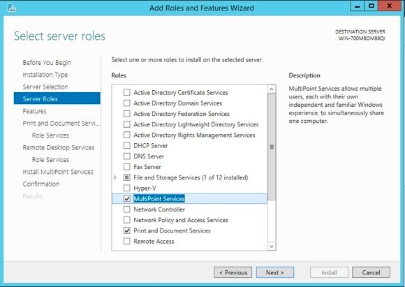

Mise en place d'un serveur Windows
1
Installation de Windows Server 2012
- Configuration du partitionnement
- Choix des rôles serveur
- Installation des fonctionnalités de base
2
Configuration des services
- Active Directory Domain Services
- DNS et DHCP
- Gestion des stratégies de groupe

